第 9 讲：屏幕空间全局光照（续）——SSDO 与 SSR
在屏幕空间里用深度和颜色信息近似方向性遮蔽与镜面反射，把 GI 做得更像路径追踪。
◆ 学完这一讲，你应该能
能说清 SSDO 相对 SSAO 改进了什么：从“均匀环境光”到“有方向性的间接光”。
能写出 SSDO 把直接光照与间接光照分开积分的思路，并解释为什么它像路径追踪。
能说明 SSR 的两个核心任务（求交与着色），以及为什么它不需要三角形等 3D 图元。
能解释深度 mipmap 的 min-Z 金字塔为什么能加速光线求交，并描述层级追踪的基本循环。
能列举 SSR 的优缺点，并判断什么材质/场景适合用 SSR。
核心结论速记
SSDO 是对 SSAO 的改进：不再假设入射间接光均匀，而是利用屏幕空间已渲染的直接光照信息来近似方向性间接光。
SSDO 在着色点向半球随机发射光线：没打中障碍物就取直接光照，打中了就取该像素作为间接光源，思路与路径追踪一致。
SSDO 把出射辐射度拆成未遮挡方向与遮挡方向两部分积分，遮挡方向用屏幕空间像素作为次级光源。
SSR 是在屏幕空间做光线追踪：用深度缓冲和颜色缓冲求交与着色，不需要场景的 3D 图元。
SSR 的求交可以借助深度 mipmap（min-Z 金字塔）做层级追踪，用保守的 min 操作快速跳过不可能相交的区域。
SSR 着色与路径追踪公式相同，但要注意平方距离衰减和着色点与次级光源之间的遮挡问题。
SSR 擅长光滑/光泽反射，对漫反射效率不高，且屏幕外信息缺失会导致反射断裂。
01从 SSAO 到 SSDO：为什么要考虑方向
上一讲我们讲了屏幕空间环境光遮蔽（SSAO）。SSAO 的做法是：在着色点周围采样深度，统计有多少方向被遮挡，从而估计一个环境光遮蔽因子。它的隐含假设是——入射的间接光在各个方向上都是均匀的，所以只需要知道“被挡了多少”，就能把环境光整体压暗。
但真实场景里，间接光往往是有方向性的：比如左边有一面红墙，右边有一面绿墙，那么着色点从左边来的间接光偏红、从右边来的偏绿。SSAO 把这一切都压成一个灰度因子，自然就丢掉了颜色和方向信息。
屏幕空间方向性遮蔽（Screen Space Directional Occlusion, SSDO） 就是针对这一点做的改进：它不再假设入射间接光均匀，而是尝试利用屏幕空间里已经渲染出来的直接光照信息，来近似有方向性的间接光。换句话说，SSAO 只回答“挡了多少”，SSDO 还要回答“挡住的方向上本来有什么光”。
课件里有一句关键的提示：“Some information of indirect lighting is already known!”——因为屏幕空间里每个像素都已经算过直接光照，这些像素就可以被当作次级光源来用。这个思路和之前讲的 RSM（反射阴影贴图）很像，区别在于 RSM 是从光源视角记录，而 SSDO 是从相机视角（屏幕空间）拿信息。
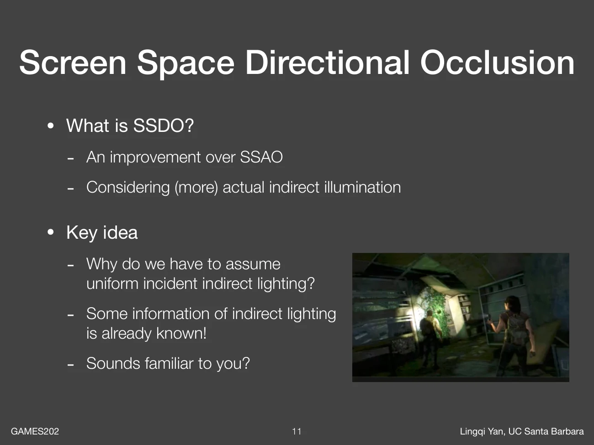
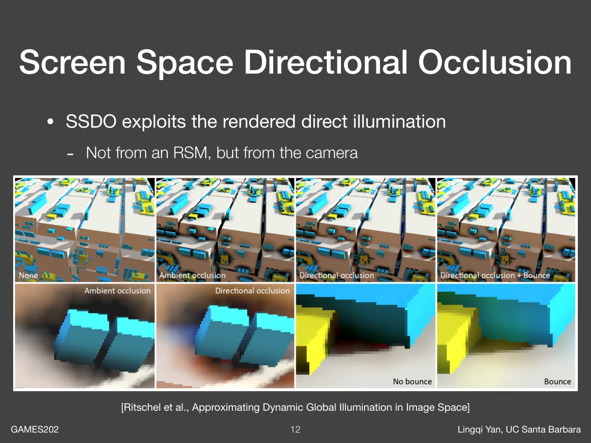
常见坑
把 SSDO 当成“SSAO 的加强版 AO” → 实际上 SSDO 引入了方向性颜色信息，输出不再是单一遮蔽因子 → 检查实现里是否用了颜色缓冲而不只是深度。
以为 SSDO 能拿到屏幕外信息 → 它和 SSAO 一样是屏幕空间方法，屏幕外的东西完全不知道 → 出现漏光/漏遮蔽时先检查是否超出视锥。
UE / Unity 落地
UE 里没有直接叫 SSDO 的开关，但 Lumen 的屏幕空间追踪（Screen Space Trace）在概念上覆盖了“用屏幕颜色做次级光源”的思路；SSAO 则在 Project Settings → Rendering → Ambient Occlusion 里。
Unity 的 URP/HDRP 有 SSAO 渲染器特性；SSDO 属于研究/自定义后处理，需要自己写全屏 Pass 读取深度与颜色。
02SSDO 的核心：像路径追踪一样在半球上打光线
SSDO 的算法直觉非常像路径追踪。对屏幕上的每个着色点 \(p\)：
- 在 \(p\) 的半球方向内随机取若干条光线；
- 对每条光线，在屏幕空间里判断它是否打中障碍物（比较采样点深度与深度缓冲）；
- 如果没打中，说明这个方向是“开阔”的，贡献的是直接光照（来自已知光源）；
- 如果打中了，说明这个方向被遮挡，遮挡它的那个像素就可以当作一个次级光源，贡献间接光照。
课件用一张对比图说明：环境光遮蔽（AO）只区分“有间接光/无间接光”，而方向性遮蔽（DO）则把“无间接光 + 间接光”都考虑进来，效果更接近路径追踪。
数学上，SSDO 把出射辐射度拆成两部分积分：未遮挡方向 \(\Omega^{+}_{\text{unocc}}\) 与遮挡方向 \(\Omega^{+}_{\text{occ}}\)。未遮挡部分贡献直接光照 \(L_{\text{dir}}\)，遮挡部分贡献间接光照 \(L_{\text{indir}}\)，其中间接光来自被遮挡方向上那个像素（patch）的出射辐射度——这个“像素作为面光源”的推导在上一讲（RSM）里已经做过。
具体实现时，SSDO 和 HBAO 类似：在局部半球内测试采样点的深度。如果采样点深度比当前像素更靠近相机（即被遮挡），就认为该方向被挡住，并把该采样点的颜色作为间接光。
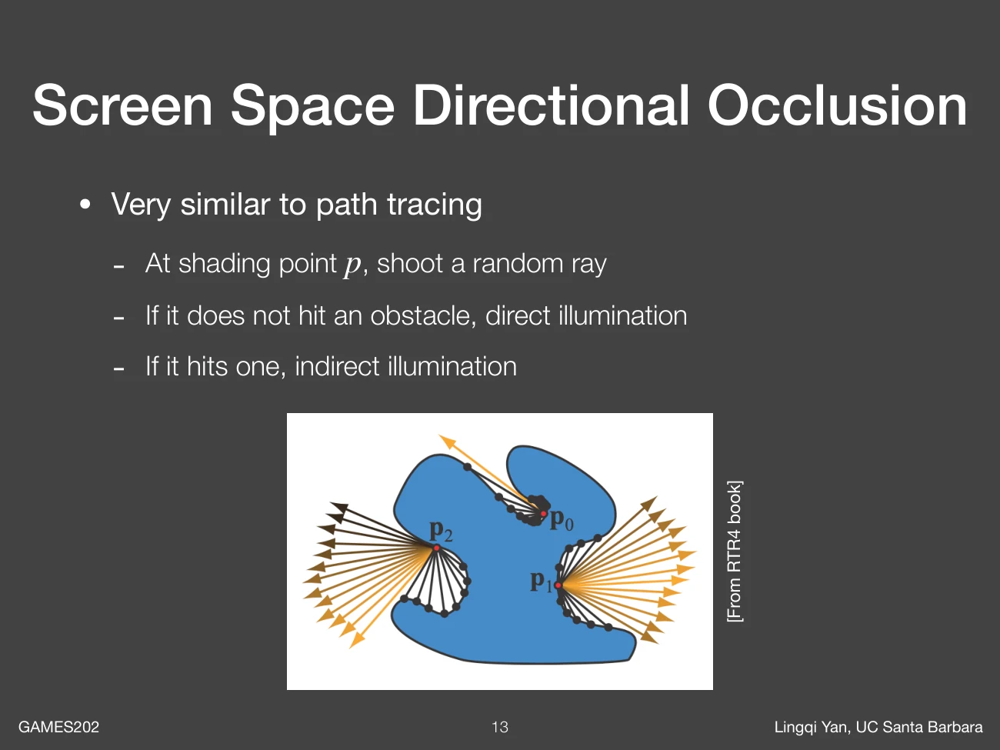
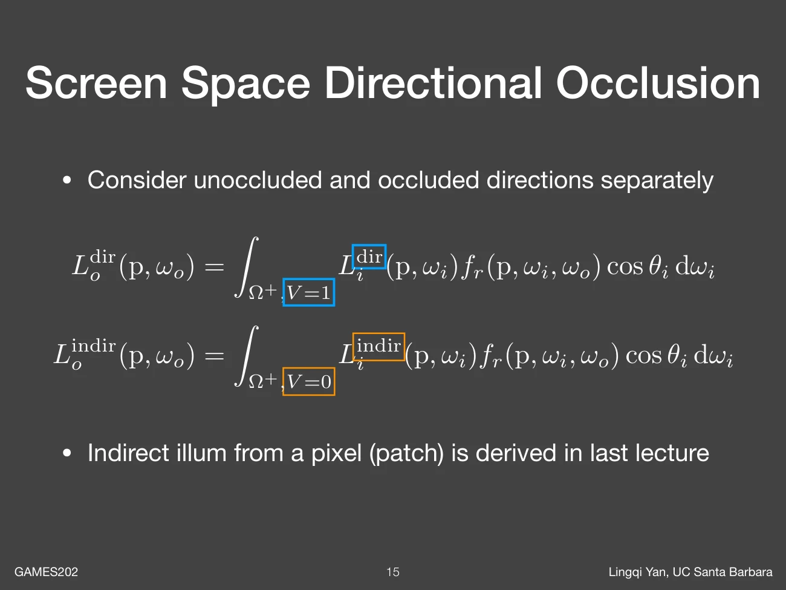
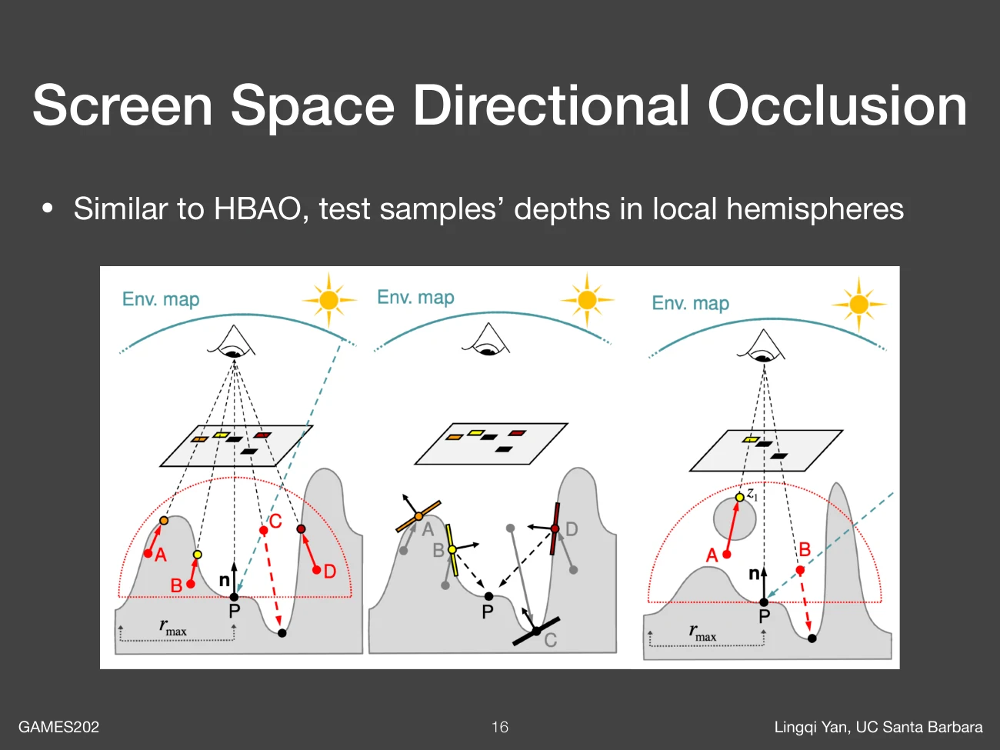
补充说明
课件中积分符号被压缩成文本，这里用文字描述其作用：未遮挡项对直接光照在可见半球上积分，遮挡项对被遮挡像素的出射辐射度积分。
常见坑
采样点深度比较方向搞反 → 把“更近”当成“更远”，导致遮蔽完全相反 → 确认深度缓冲的约定（越大越远还是越小越远），并统一比较符号。
半球采样方向没有随法线建立局部坐标系 → 采样跑到物体内部，出现黑斑 → 用切线空间（TBN）把采样方向从局部半球变换到世界空间。
采样数太少或分布不均 → 噪点明显 → 增加采样数或用蓝噪声/泊松盘分布，再做时域或空间降噪。
UE / Unity 落地
UE 的 Lumen 在屏幕空间追踪阶段也是“沿光线步进深度缓冲，命中则取屏幕颜色”，与 SSDO 的命中逻辑同源；可以在 Lumen 的 Visualize 里看 Screen Space Trace 的命中情况。
Unity HDRP 的 Screen Space Global Illumination（SSGI）在概念上就是 SSDO 的工程化版本：读深度+颜色，半球采样，输出间接光。
SSDO 单像素伪代码（示意）（hlsl）
float3 SSDO(float2 uv, float3 P, float3 N) {
float3 indirect = 0;
for (int i = 0; i < SAMPLE_COUNT; ++i) {
float3 dir = SampleHemisphere(i, N); // 局部半球 -> 世界
float3 q = P + dir * RADIUS; // 屏幕空间采样点
float2 qUV = ProjectToScreen(q);
float qDepth = TexDepth(qUV);
if (qDepth < LinearDepth(q)) { // 被遮挡
indirect += TexColor(qUV) * max(0, dot(N, dir));
}
}
return indirect / SAMPLE_COUNT;
}03SSDO 的局限：短程 GI 与屏幕空间缺失
SSDO 的效果比 SSAO 更接近离线渲染，但它仍然不是真正的全局光照。课件明确列出两个问题：
第一，仍然是短程 GI（GI in a short range）。 SSDO 的间接光只来自屏幕空间里邻近的像素，采样半径通常只有几十个像素。这意味着它只能捕捉着色点附近物体之间的颜色渗透（color bleeding），对于远处大范围的光能传递无能为力。课件用一张图打了个叉，说明超出这个范围就没有间接光了。
第二，可见性与屏幕空间缺失。 SSDO 依赖深度缓冲判断遮挡，而深度缓冲只包含相机能看到的东西。如果某个间接光源在屏幕外，或者被前景物体挡住但在屏幕空间里“看不见”，SSDO 就完全不知道它的存在，会导致漏光或漏遮蔽。
这两点和 SSAO、SSR 的局限是同一类问题：屏幕空间方法本质上是用“相机能看到的信息”去近似“整个场景的信息”，所以一旦信息缺失就会出错。工程上常见的缓解办法是：结合探针（probe）、距离场或体素 GI 来补全屏幕外信息，或者用时间累积来平滑噪声。
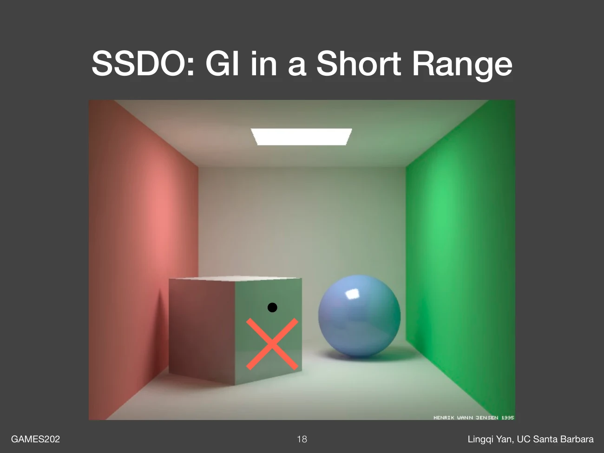
常见坑
把 SSDO 当成完整 GI 来用 → 大场景里颜色渗透只出现在物体接触边缘 → 需要配合探针/光照贴图补远程 GI。
屏幕边缘出现反射/遮蔽断裂 → 屏幕外信息缺失 → 可以扩大采样半径或做边缘淡出（fade），但无法根治。
UE / Unity 落地
UE 的 Lumen 用距离场（Mesh Distance Fields）和表面缓存来补屏幕外信息，正是为了缓解屏幕空间方法的缺失问题。
Unity 的 SSGI 在 HDRP 里也建议配合光照探针或反射探针使用，避免屏幕外信息丢失。
04SSR 是什么：在屏幕空间做光线追踪
屏幕空间反射（Screen Space Reflection, SSR） 是另一种在实时渲染里引入全局光照效果的方法。它的核心思想很直接：做光线追踪，但不需要场景的 3D 图元（三角形等），而是直接在屏幕空间的深度缓冲和颜色缓冲上做。
为什么可以不用三角形？因为深度缓冲已经告诉我们每个像素对应的场景表面在哪里。一条光线在屏幕空间里步进，每走一步就检查当前点的深度是否“穿到”了深度缓冲所表示的表面前方——如果穿过去了，就说明光线与场景相交了。相交之后，取那个像素的颜色作为反射光。
SSR 有两个基本任务：
- 求交（Intersection）：任意一条光线与场景求交。在屏幕空间里，这变成“光线步进 + 深度比较”。
- 着色（Shading）：把相交像素的贡献算到着色点上。这一步和路径追踪的着色公式完全一样。
课件特别指出，SSR 的着色“absolutely no difference from path tracing”，只是把次级光源换成了屏幕空间里相交的像素。这也意味着路径追踪里的那些细节问题——平方距离衰减、着色点与次级光源之间的遮挡——在 SSR 里同样需要考虑。
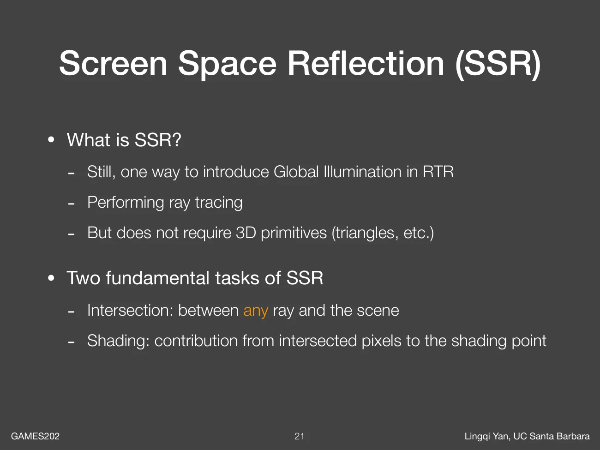
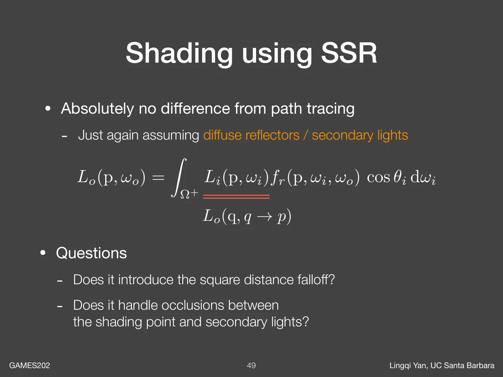
常见坑
以为 SSR 能反射屏幕外物体 → 屏幕空间方法只能反射相机看得到的东西 → 屏幕边缘反射会断裂，需要反射探针兜底。
着色时忘记乘平方距离衰减 → 反射亮度不随距离变化，看起来像自发光 → 按路径追踪的几何项补上 \(1/r^2\) 或对应的立体角转换。
UE / Unity 落地
UE 的反射系统里，SSR 是默认开启的一层（Project Settings → Rendering → Reflections → Screen Space Reflections），屏幕外部分由反射捕获（Reflection Capture）补全。
Unity 的 URP/HDRP 都有 Screen Space Reflection 选项，HDRP 里还可以调光线步进的最大距离与层数。
05用深度 mipmap 加速求交：min-Z 金字塔与层级追踪
如果每条光线都逐像素步进，代价会非常高。SSR 的加速思路和 3D 空间里的 BVH、KD-tree 非常像：建立层次结构，快速跳过不可能相交的区域。
具体做法是构建深度 mipmap（min-Z 金字塔）：第 0 层是原始深度，第 1 层每个像素取 2×2 区域深度的最小值，第 2 层再取第 1 层的最小值，依此类推。为什么取最小值？因为要保证保守性：如果一个光线连一个较大的节点（区域）都不相交，那它一定不会与这个节点里的任何子节点相交。取 min 相当于把整个区域“抬高”到最靠近相机的那个表面，光线只要没穿过这个最靠前的表面，就不可能穿过区域里任何表面。
有了金字塔，就可以做层级追踪（hierarchical tracing）。课件给出的伪代码是一个无栈的光线步进（stackless ray walk）：
mip = 0;
while (level > -1) {
step through current cell;
if (above Z plane) ++level; // 光线在表面之上，可以放大步长
if (below Z plane) --level; // 光线穿到表面之下，需要缩小步长
}
直觉是：光线在空旷区域时，用高层（大区域）快速前进；一旦发现光线“钻到”了表面下方，就降一层，用更细的网格检查，直到第 0 层确认相交。整个过程不需要递归栈，适合 GPU 并行。
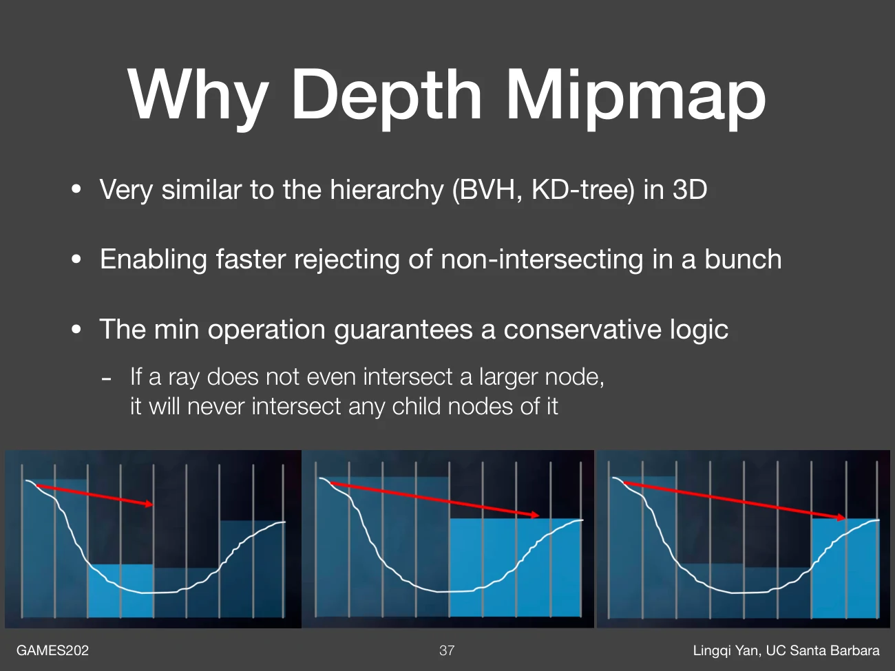
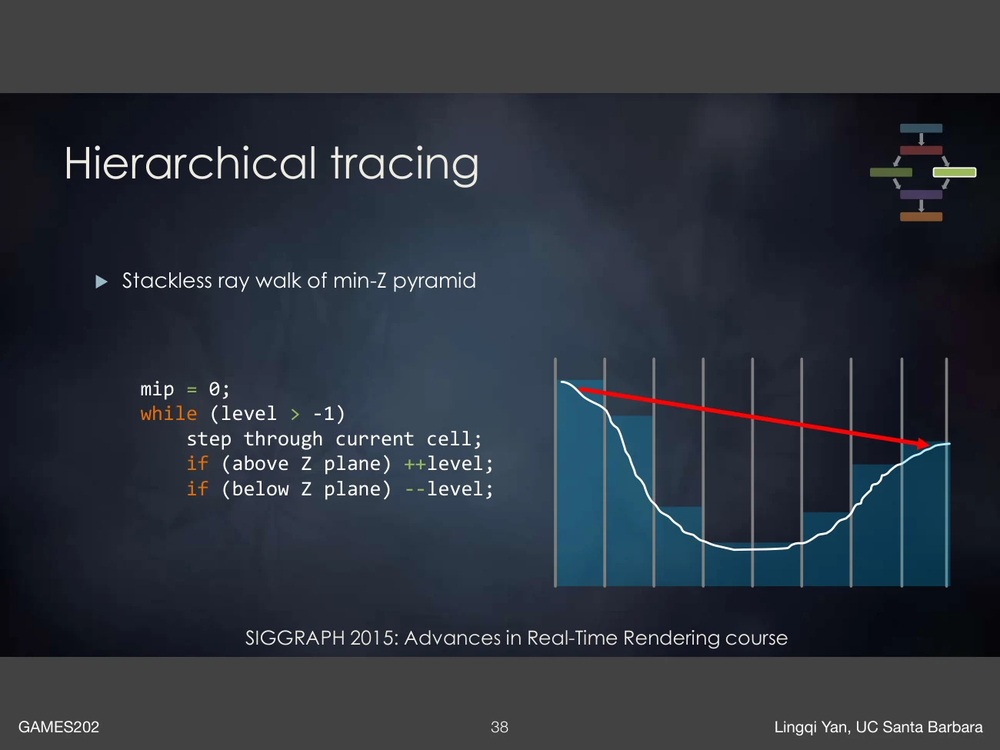
常见坑
mipmap 用平均值而不是最小值 → 保守性被破坏，光线可能穿过区域却没被检测到 → 确认构建时用 min 操作。
层级切换条件写反 → 光线在表面之上却降层，导致步进过慢 → 检查“above Z plane”对应升层、“below”对应降层。
光线步进没有最大步数限制 → 极端情况下死循环 → 加最大迭代次数或最大距离。
UE / Unity 落地
UE 的 SSR 实现里同样使用层级深度（Hierarchical Z）来加速光线步进，可以在引擎源码的 ScreenSpaceReflection 相关 shader 里看到。
Unity HDRP 的 SSR 也有类似的层级步进优化；如果自己写后处理，可以用 Compute Shader 构建 min-Z 金字塔。
min-Z 金字塔构建（示意）（hlsl）
// level 0: 原始深度
// level k: 对 level k-1 做 2x2 取 min
float minZ = min(min(d00, d01), min(d10, d11));
OutDepth[level][uv] = minZ;06SSR 的着色与工程改进：粗糙度、接触硬化与预滤波
求交之后就是着色。SSR 的着色公式和路径追踪完全一样：
\[ L_o(p, \omega_o) = \int_{\Omega^+} L_i(p, \omega_i) f_r(p, \omega_i, \omega_o) \cos\theta_i \, d\omega_i \]
其中 \(L_i\) 来自相交像素 \(q\) 的出射辐射度 \(L_o(q, q \to p)\)。课件抛出两个问题：是否引入平方距离衰减？是否处理着色点与次级光源之间的遮挡？ 答案是：路径追踪里怎么处理，SSR 里就怎么处理——几何项和可见性都不能省。
但真实材质不是完美镜面。课件列出了一组需求：
- 清晰与模糊反射（sharp and blurry reflections）：粗糙度不同，反射的模糊程度不同；
- 接触硬化（contact hardening）：靠近物体的反射更清晰，远处更模糊；
- 高光拉长（specular elongation）：掠射角下高光被拉长；
- 逐像素粗糙度与法线（per-pixel roughness and normal）：每个像素的材质参数都要参与。
对应的工程改进包括：BRDF 重要性采样（按 BRDF 分布采样反射方向，而不是均匀采样）、邻居命中点复用（hit point reuse across neighbors，减少重复求交）、预滤波采样并按 BRDF 加权（prefiltered samples weighted by each BRDF）。这些技巧让 SSR 能用少量光线得到较平滑的光泽反射。
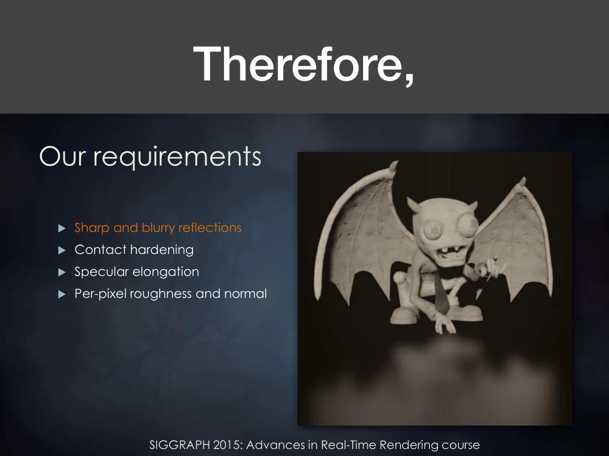
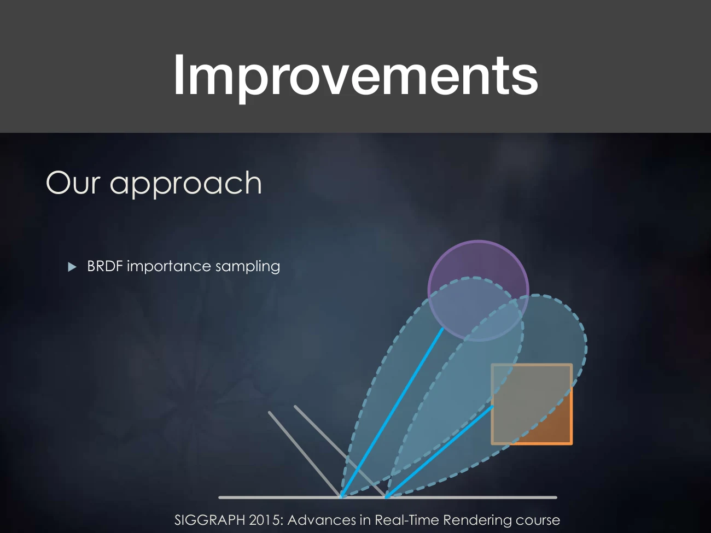
常见坑
对所有粗糙度用同样的采样数 → 粗糙材质噪点多、光滑材质浪费 → 按粗糙度自适应调整采样数或滤波核大小。
忽略法线变化 → 法线贴图导致的细节反射丢失 → 着色时用逐像素法线，而不是几何法线。
反射结果没有做时域累积 → 帧间闪烁 → 结合 TAA 或时域降噪。
UE / Unity 落地
UE 的 SSR 质量档位（Low/Medium/High/Epic）本质上就是在调光线步进次数与粗糙度处理；材质里的 Roughness 会直接影响反射模糊。
Unity HDRP 的 SSR 有“Accumulation”与“Filtering”选项，对应时域累积与预滤波。
07SSR 的优缺点与适用场景
课件最后总结了 SSR 的优缺点：
优点：
- 对光泽/镜面反射（glossy and specular reflections）性能很快；
- 质量不错；
- 没有“尖刺”（spikes）和遮挡问题——相比一些基于探针的方法，SSR 的反射在几何上更准确。
缺点：
- 在漫反射情况下效率不高（not as efficient in the diffuse case）——因为漫反射需要大量方向采样，而 SSR 的求交成本高；
- 屏幕外信息缺失（missing information outside the screen）——反射在屏幕边缘会断裂。
所以 SSR 的典型用法是：作为镜面/光泽反射的一层，配合反射探针（reflection probe）或平面反射（planar reflection）来补全屏幕外信息；漫反射 GI 则交给 SSDO、光照探针或 Lumen 这类系统。
从工程角度看，SSR 是“用屏幕空间信息换质量”的典型代表：它便宜、效果直观，但边界条件必须由其他系统兜底。理解这一点，比记住某个具体实现更重要。
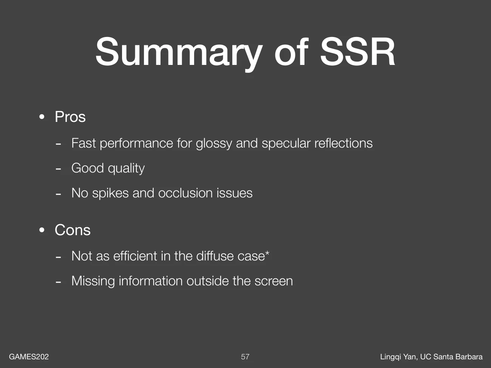
常见坑
在粗糙漫反射表面上开高成本 SSR → 性能浪费且噪点多 → 对 Roughness 高的材质降低 SSR 质量或直接关闭。
屏幕边缘反射突然消失 → 没有反射探针兜底 → 在场景里布置反射捕获/反射探针，并做边缘淡出。
UE / Unity 落地
UE 里反射的优先级：SSR → 反射捕获 → 天空光照；可以在 Project Settings 里调整 Screen Space Reflection 的强度与质量。
Unity 里用 Reflection Probe 补全屏幕外反射，HDRP 的 SSR 可以与探针混合。
引擎对照表
| 概念 / 效果 | Unreal Engine | Unity |
|---|---|---|
屏幕空间环境光遮蔽 | Project Settings → Rendering → Ambient Occlusion（SSAO） | URP/HDRP 的 SSAO 渲染器特性 |
屏幕空间方向性遮蔽/间接光 | Lumen 的 Screen Space Trace（概念对应） | HDRP 的 Screen Space Global Illumination（SSGI） |
屏幕空间反射 | Project Settings → Rendering → Reflections → Screen Space Reflections | URP/HDRP 的 Screen Space Reflection 选项 |
层级深度加速求交 | SSR shader 中的 Hierarchical Z 步进 | HDRP SSR 的层级步进（自定义 Compute Shader 可实现） |
屏幕外信息补全 | Reflection Capture / Sky Light / Lumen 距离场 | Reflection Probe / Light Probe |
粗糙度对反射的影响 | 材质 Roughness 输入 | 材质 Smoothness/Roughness 属性 |
术语双语表
| English | 中文 | 说明 |
|---|---|---|
| SSDO | 屏幕空间方向性遮蔽 | 在 SSAO 基础上引入方向性间接光的屏幕空间 GI 方法。 |
| SSR | 屏幕空间反射 | 在屏幕空间用深度和颜色缓冲做光线追踪来近似反射。 |
| Min-Z Pyramid | 最小深度金字塔 | 对深度图逐级取 min 构建的层次结构，用于保守地加速光线求交。 |
| Hierarchical Tracing | 层级追踪 | 根据光线与表面的相对位置动态调整 mip 层级的光线步进方法。 |
| Contact Hardening | 接触硬化 | 反射/遮蔽在靠近物体处更清晰、远处更模糊的现象。 |
| Specular Elongation | 高光拉长 | 掠射角下高光沿切线方向被拉长的现象。 |
| BRDF Importance Sampling | BRDF 重要性采样 | 按 BRDF 分布采样方向，让样本集中在贡献大的区域。 |
| Color Bleeding | 颜色渗透 | 物体表面颜色通过间接光影响邻近表面的现象。 |
| Screen Space GI | 屏幕空间全局光照 | 仅利用相机可见信息近似全局光照的一类方法的总称。 |
课后练习
01 SSAO 与 SSDO 的核心区别是什么？为什么说 SSDO 更接近路径追踪？
查看答案
提示：
从“入射间接光是否均匀”和“是否利用屏幕颜色”两个角度想。
SSAO 假设入射间接光在各方向均匀，只估计遮蔽因子，输出灰度；SSDO 不假设均匀，利用屏幕空间已渲染的直接光照颜色作为次级光源，在半球上采样：未命中取直接光，命中取该像素颜色作为间接光。这与路径追踪“发射光线、命中则取交点出射辐射度”的逻辑一致，因此更接近路径追踪。
02 SSR 为什么不需要三角形等 3D 图元？它的两个基本任务是什么？
查看答案
提示：
深度缓冲告诉了我们什么？
因为深度缓冲已经记录了每个像素对应表面的位置，光线在屏幕空间步进时只需比较当前点深度与深度缓冲，就能判断是否与场景相交。两个基本任务是：求交（光线与场景）和着色（把相交像素的贡献算到着色点）。
03 深度 mipmap 为什么取 min 而不是平均值？请用“保守性”解释。
查看答案
提示：
如果光线连最靠前的表面都没穿过，它可能穿过后面的表面吗？
取 min 得到的是区域内最靠近相机的深度。如果光线没有穿过这个最靠前的表面，它就不可能穿过区域内任何更远的表面，因此可以安全地跳过整个区域——这就是保守性。取平均值会得到一个“虚构”的中间深度，光线可能穿过区域却没被检测到，破坏保守性。
04 SSR 的着色公式与路径追踪相同，课件提出两个问题：是否引入平方距离衰减？是否处理遮挡？请说明为什么这两个问题在 SSR 里同样存在。
查看答案
提示：
相交像素被当作次级光源。
因为 SSR 把相交像素当作次级面光源，路径追踪里从面光源到着色点的几何项（含平方距离衰减）和可见性项都必须保留；否则反射亮度不随距离变化，且着色点与次级光源之间被遮挡时仍会错误地收到光。
05 在一个有大面积粗糙地面的场景里，你会如何配置 SSR？为什么？
查看答案
提示：
考虑粗糙度与性能。
对粗糙地面降低 SSR 质量或关闭 SSR，因为 SSR 在漫反射/高粗糙度情况下效率低且噪点多；改用反射探针或光照探针提供低频反射，SSR 只用于光滑/光泽表面（如水面、金属），并配合边缘淡出避免屏幕外断裂。